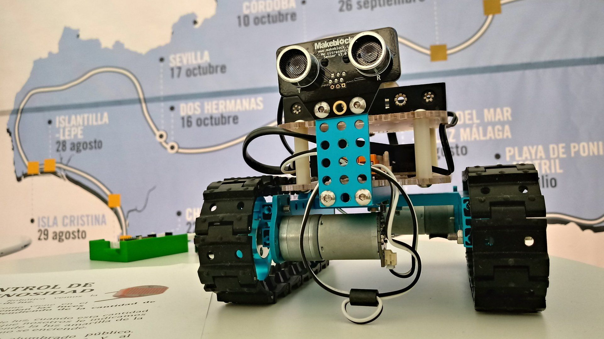
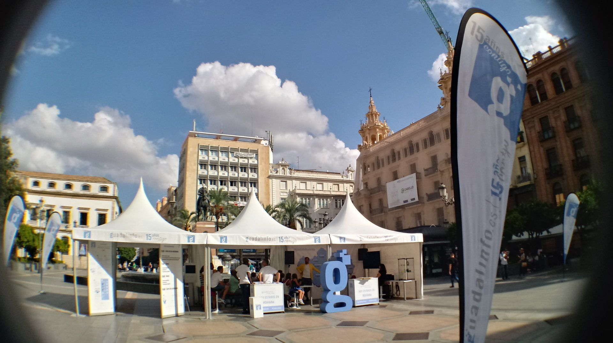
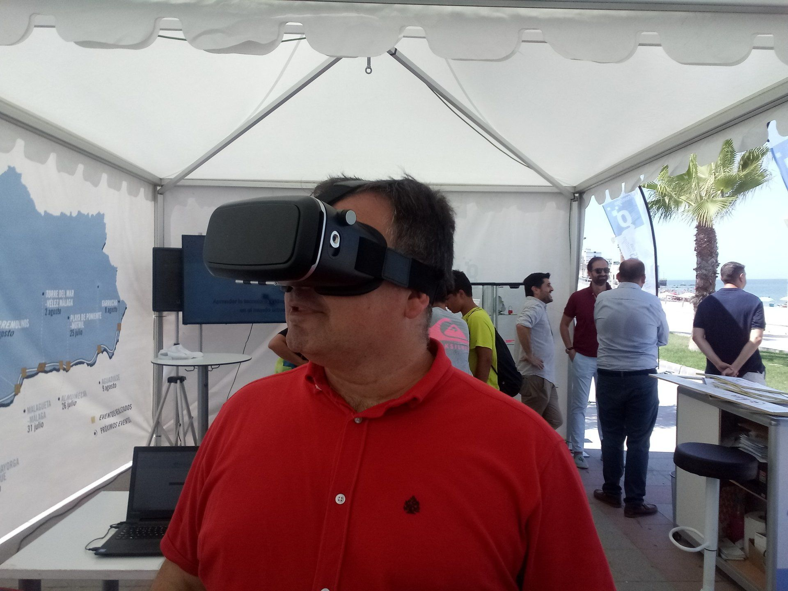
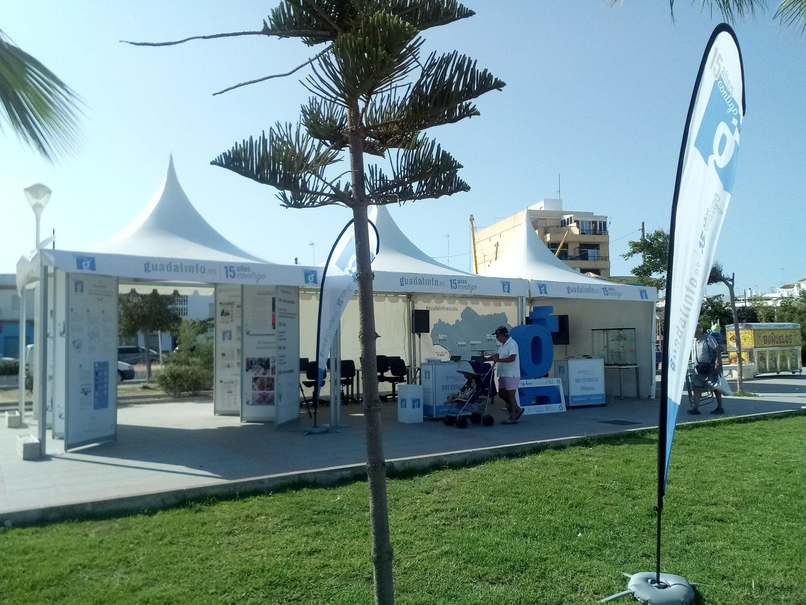
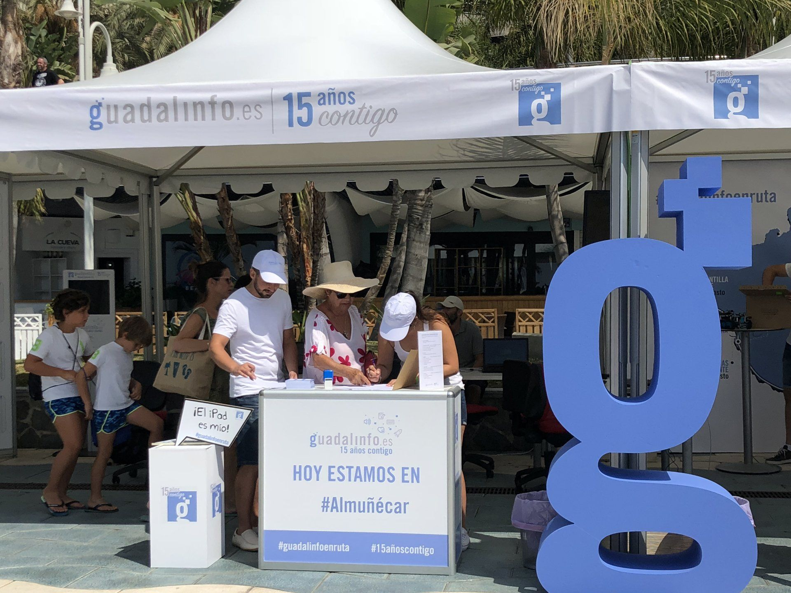

Nos ocupamos de la organización integral de todo el evento de Guadalinfo en ruta
diseñamos la imagen del evento y la plasmamos en las 3 jaimas que simulaban las instalaciones Guadalinfo.
Una de las jaimas contaba con paneles modulares expositivos y en las otras dos se realizaron actividades
de robotica, scratch, impresión 3D y administración electrónica.
Pusimos a disposición de todos los asistentes unas gafas de realidad virtual 360º con las que podían
trasladarse a un centro de Guadalinfo.
El espacio se decoró con una letra G de porexpan, photocall selfie, bocadillos, lona con mapa de la ruta y
banderas tipo gota con la imagen del evento.
Todo el evento quedó documentado con material audiovisual para su difusión en medios y redes.




Guadalinfo celebró sus 15 años con este evento itinerante con 2 puestas, una en verano para las zonas costeras y otra de invierno para las zonas del interior de Andalucía. En total de 30 puestas en las que los usuarios que accedieron, pudieron realizar las actividades administración electrónica, competencias digitales, digitalización de empresas, uso de las redes sociales y el manejo responsable y seguro de las TIC.